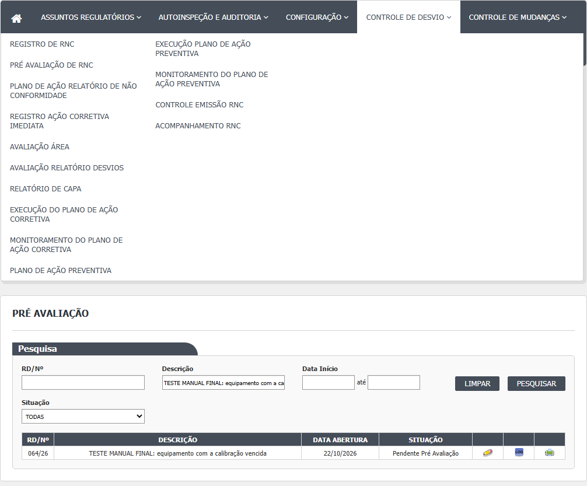
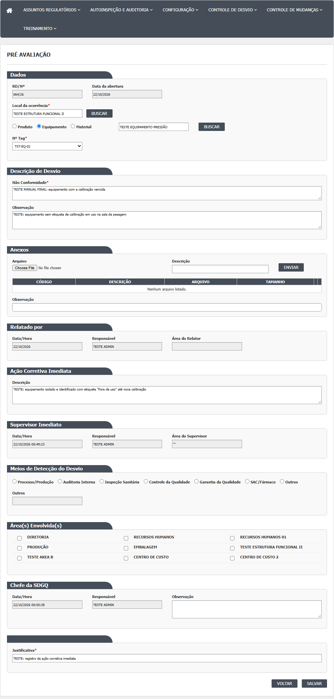
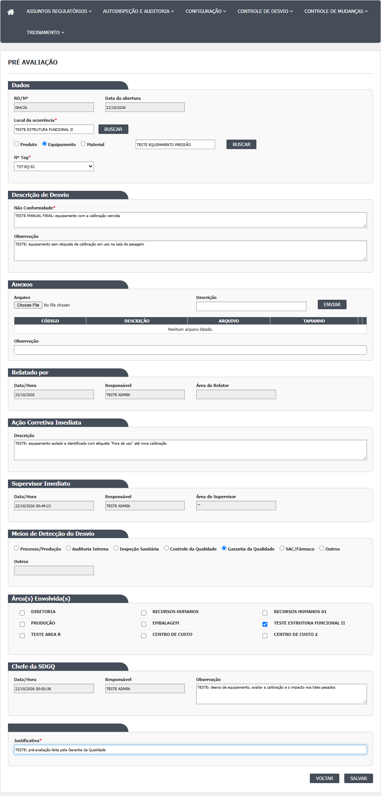
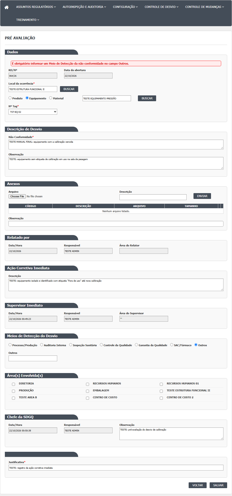
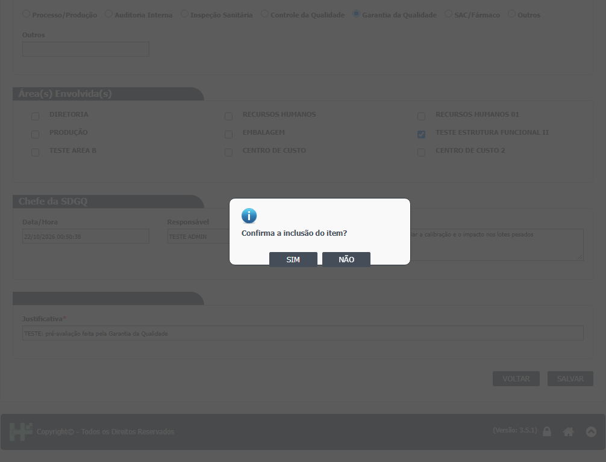
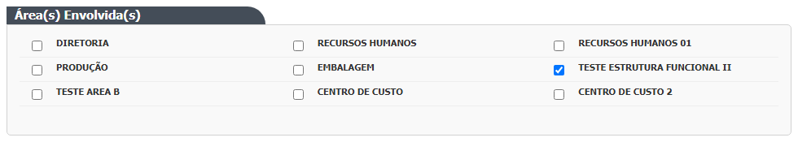
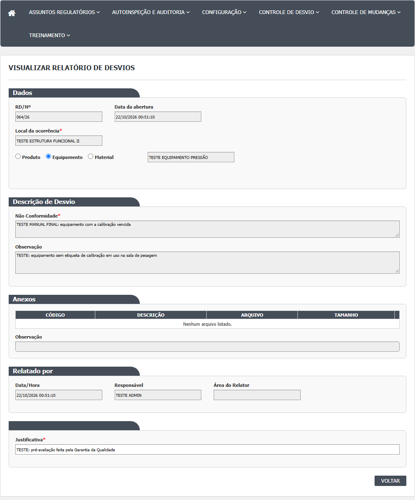
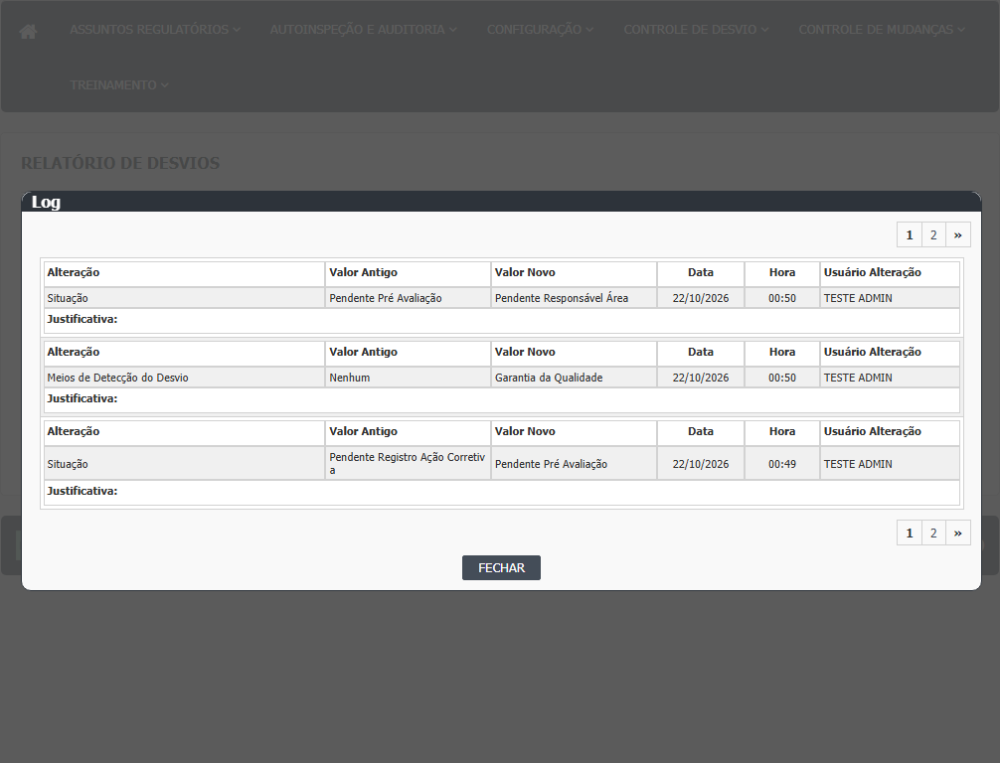

A lista (tela inicial)
- Passo 1. No menu, abra Controle de Desvios › Pré Avaliação Relatório Desvios. A tela mostra o quadro "Pesquisa". Não há botão Incluir: esta tela não cria desvios.
- Passo 2. Filtros opcionais: RD/Nº (digite só o número, por exemplo 007; confirmado em 21/10/2026 que, com o ano, como 030/26, a pesquisa não acha o desvio, DV-GQ-026), Descrição, Data Início e Data Fim (dd/mm/aaaa, com calendário) e Situação. O campo Situação só tem "Pendente Pré Avaliação" e não faz efeito, porque a lista já mostra só essa situação. Clique em Pesquisar.
- Passo 3. A lista traz os desvios em Pendente Pré Avaliação, com as colunas RD/Nº, DESCRIÇÃO, DATA ABERTURA e SITUAÇÃO. Esta lista não tem a coluna Meios de Detecção.
- Passo 4. Ícones por linha: lápis (Editar), lupa (Visualizar, quando o lápis não aparece), histórico (Log) e impressora (Imprimir). Não há lixeira: esta tela não cancela desvios.
- Passo 5. Sem resultado: "A pesquisa não retornou nenhum resultado." Limpar esvazia filtros e lista.

Pré-avaliar um desvio
- Passo 1. Clique no lápis. Abre a tela "Pré Avaliação" com o relatório do desvio em cima (local, item, descrição, anexos, quem relatou), o quadro "Ação Corretiva Imediata" já registrado, e, abaixo, os quadros da pré-avaliação.
- Passo 2. Quadro "Meios de Detecção do Desvio": escolha uma das opções (Processo/Produção, Auditoria Interna, Inspeção Sanitária, Controle da Qualidade, Garantia da Qualidade, SAC/Fármaco, Outros). Obrigatório. Se escolher "Outros", escreva no campo Outros como o desvio foi detectado (o campo só habilita com "Outros"). Sem o texto, aparece "É obrigatório informar um Meio de Detecção da não conformidade no campo Outros." (confirmado em 21/10/2026); 150 caracteres foram aceitos.
- Passo 3. Quadro "Área(s) Envolvida(s)": marque as áreas que precisam opinar sobre o desvio. Pode marcar nenhuma, uma ou várias. As áreas aparecem em linhas de três. Confirmado em 21/10/2026: com duas áreas marcadas, o desvio vai a Pendente Responsável Área e cada área o vê na sua lista de Avaliação Área.
- Passo 4. Quadro "Chefe da SDGQ": Data/Hora e Responsável vêm preenchidos e travados. Em Observação, escreva a observação do chefe da GQ (opcional).
- Passo 5. No fim da tela, Justificativa (obrigatória; vem com o texto da última justificativa do desvio, se houver).
- Passo 6. Os campos do relatório de cima (local, item, descrição, observação, anexos) também não ficam travados nesta tela e podem ser alterados. O quadro da ação imediata também permite alterar a descrição da ação.
- Passo 7. Clique em Salvar. O sistema pergunta "Confirma a inclusão do item?". Responda SIM. Se faltar algo, aparece uma faixa vermelha com a mensagem no começo do quadro Dados. Se der certo: "Alteração efetuada com sucesso." e a tela volta para a lista.
- Passo 8. O desvio vai para Pendente Avaliação Relatório de Desvios (sem áreas marcadas) ou Pendente Responsável Área (com áreas).
- Passo 9. Voltar sai sem salvar.





Visualizar
- Passo 1. Clique na lupa (ela só aparece quando o lápis não aparece). Abre a tela "Pré Avaliação RNC", uma tela mais antiga, com campos travados.
- Passo 2. Ela mostra RD/Nº, meio de detecção (só 4 opções, com nomes que não conferem com os da tela de edição), descrição, anexos, quem registrou, e vários quadros que ficam vazios ou desmarcados (setores envolvidos, responsável imediato, ação imediata, criticidade, reunião de avaliação). Não mostra local, item, lote nem as áreas envolvidas marcadas.
- Passo 3. Os botões são Imprimir e Voltar.

Histórico e impressão
- Histórico: janela "Log de Alteração", com campo, valor antigo, valor novo, data, hora, usuário e justificativa.
- Imprimir: abre o relatório de RNC em modelo de pré-avaliação, em outra janela.

Rodada 2 (22/10/2026)
Fonte: execucao/2026-10-22-desvios-rodada-2/resultado.md. Só o que a rodada mostrou de novo ou contrariou.
- Pré-avaliar, passos 7 e 8. Com áreas marcadas, o desvio 016/26 foi de Pendente Pré Avaliação para Pendente Responsável Área (CT-GQ-N03-017).
- Histórico depois de salvar. Mostra a mudança de situação, a troca do responsável do desvio (de quem registrou para quem pré-avaliou) e o meio de detecção (de Nenhum para Controle da Qualidade), com valor antigo e novo, e a justificativa vazia. A justificativa digitada não aparece (RN-GQ-D03-020; DV-GQ-035 e DV-GQ-036).
- Visualizar (lupa). Não foi possível chegar à tela de consulta antiga: nesta lista a lupa não aparece, porque só há desvios em Pendente Pré Avaliação, sempre com o lápis, e os desvios já pré-avaliados não voltam a esta situação pelas outras telas (CT-GQ-N03-021, Bloqueado; RN-GQ-D03-021). O passo 1 da seção "Visualizar" descreve, por isso, um caminho que a tela não oferece.
Campos da tela
Lista (filtros e colunas)
| Campo na tela | Tipo | Obrigatório | Regra, limite ou valores possíveis | Fonte (arquivo:linha) |
|---|---|---|---|---|
| RD/Nº | Texto, sem máscara | Não | Procura o texto digitado dentro do número (contém). Digitar com o ano (por exemplo 007/26) não acha nada, porque o número guardado não tem o ano. Confirmado em 21/10/2026 (caso CT-GQ-F06): com o ano não acha (DV-GQ-026); com o número puro acha. | HSolutions.GQ.UI/Areas/Bloco2/Views/PreAvaliacaoRNC/Index.cshtml:26-28; HSolutions.GQ.UI/Areas/Bloco2/Controllers/PreAvaliacaoRNCController.cs:63-64 |
| Descrição | Texto | Não | Contém | HSolutions.GQ.UI/Areas/Bloco2/Views/PreAvaliacaoRNC/Index.cshtml:31-33; HSolutions.GQ.UI/Areas/Bloco2/Controllers/PreAvaliacaoRNCController.cs:66-67 |
| Data Início | Data dd/mm/aaaa com calendário e máscara | Não | Sozinha: um dia. Com Data Fim: período mais o dia seguinte. Confirmado em 21/10/2026 (caso CT-GQ-F07): sozinha filtra só aquele dia. Data inválida (31/02/2026) é ignorada em silêncio, sem mensagem (DV-GQ-027). | HSolutions.GQ.UI/Areas/Bloco2/Views/PreAvaliacaoRNC/Index.cshtml:38-40; HSolutions.GQ.UI/Areas/Bloco2/Script/PreAvaliacaoRNCIndex.js:2-3; HSolutions.GQ.UI/Areas/Bloco2/Controllers/PreAvaliacaoRNCController.cs:69-81 |
| Data Fim | Data dd/mm/aaaa com calendário e máscara | Não | Sozinha: ignorada | HSolutions.GQ.UI/Areas/Bloco2/Views/PreAvaliacaoRNC/Index.cshtml:41-44; HSolutions.GQ.UI/Areas/Bloco2/Script/PreAvaliacaoRNCIndex.js:4-5 |
| Situação | Lista | Não, e sem efeito | TODAS (padrão) e "Pendente Pré Avaliação". O servidor ignora este filtro (as linhas que o aplicavam estão comentadas) | HSolutions.GQ.UI/Areas/Bloco2/Models/PreAvaliacaoRNCIndexModel.cs:20-23; HSolutions.GQ.UI/Areas/Bloco2/Controllers/PreAvaliacaoRNCController.cs:83-87 |
| Colunas RD/Nº, DESCRIÇÃO, DATA ABERTURA e SITUAÇÃO | Texto (resultado) | Não | Sem a coluna MEIOS DE DETECÇÃO. Sempre mostra a situação Pendente Pré Avaliação | HSolutions.GQ.UI/Areas/Bloco2/Script/PreAvaliacaoRNCIndex.js:30-37; HSolutions.GQ.UI/Areas/Bloco2/Models/PreAvaliacaoRNCResultadoIndexModel.cs:40-45 |
Edição (tela Pré Avaliação): relatório do desvio
| Campo na tela | Tipo | Obrigatório | Regra, limite ou valores possíveis | Fonte (arquivo:linha) |
|---|---|---|---|---|
| RD/Nº | Texto travado | Preenchido sozinho | Formato nnn/aa | HSolutions.GQ.UI/Areas/Bloco2/Views/Shared/_PartialRelatorioDesvio.cshtml:91-92; HSolutions.GQ.UI/Areas/Bloco2/Models/PartialRelatorioDesvioModel.cs:190 |
| Data da abertura | Texto travado | Preenchido sozinho | Data de criação do desvio (só a data) | HSolutions.GQ.UI/Areas/Bloco2/Views/Shared/_PartialRelatorioDesvio.cshtml:95-96; HSolutions.GQ.UI/Areas/Bloco2/Models/PartialRelatorioDesvioModel.cs:264 |
| Local da ocorrência e botão buscar | Texto mais botão | Sim (servidor: código do local diferente de zero) | Busca com 3 ou mais caracteres; habilitado nesta tela | HSolutions.GQ.UI/Areas/Bloco2/Views/Shared/_PartialRelatorioDesvio.cshtml:102-106; HSolutions.GQ.Domain/Service/RelatorioNaoConformidadeValidator.cs:30-34 |
| Tipo do item | Botões de opção | Não | Produto, Equipamento, Material | HSolutions.GQ.UI/Areas/Bloco2/Views/Shared/_PartialRelatorioDesvio.cshtml:112-127; HSolutions.GQ.UI/Areas/Bloco2/Models/PartialRelatorioDesvioModel.cs:145-158 |
| Item e botão buscar | Texto mais botão | Não | Busca com 3 ou mais caracteres. Produto: Estoque e Produção; Material: Estoque; Equipamento: Principal | HSolutions.GQ.UI/Areas/Bloco2/Views/Shared/_PartialRelatorioDesvio.cshtml:130-134; HSolutions.GQ.UI/Areas/Bloco2/Controllers/PreAvaliacaoRNCController.cs:470-545 |
| Nº Lote, Nº Tag, Registro de entrada, Adicionar e grade de lotes | Listas, botão e grade | Só visual | Como no Relatório de Desvios. Para Equipamento, o Nº Tag é buscado pelo nome do item | HSolutions.GQ.UI/Areas/Bloco2/Views/Shared/_PartialRelatorioDesvio.cshtml:142-181; HSolutions.GQ.UI/Areas/Bloco2/Controllers/PreAvaliacaoRNCController.cs:136-148 |
| Não Conformidade | Texto longo | Sim (servidor) | Descrição do desvio, editável aqui | HSolutions.GQ.UI/Areas/Bloco2/Views/Shared/_PartialRelatorioDesvio.cshtml:191-192; HSolutions.GQ.Domain/Service/RelatorioNaoConformidadeValidator.cs:24-28 |
| Observação do desvio | Texto longo | Não | Livre | HSolutions.GQ.UI/Areas/Bloco2/Views/Shared/_PartialRelatorioDesvio.cshtml:198-199 |
| Anexos: Arquivo, Descrição, Enviar, grade e Observação | Arquivo, texto, botão, grade, texto | Arquivo e descrição para enviar | Como no Relatório de Desvios | HSolutions.GQ.UI/Areas/Bloco2/Views/Shared/_PartialRelatorioDesvio.cshtml:208-235 |
| Relatado por: Data/Hora, Responsável, Área do Relator | Textos travados | Preenchidos sozinhos | Data de criação, nome de quem criou o desvio e área gravada no desvio | HSolutions.GQ.UI/Areas/Bloco2/Views/Shared/_PartialRelatorioDesvio.cshtml:240-261; HSolutions.GQ.UI/Areas/Bloco2/Models/PartialRelatorioDesvioModel.cs:263-264 |
Edição: ação imediata, pré-avaliação, justificativa e botões
| Campo na tela | Tipo | Obrigatório | Regra, limite ou valores possíveis | Fonte (arquivo:linha) |
|---|---|---|---|---|
| Ação Corretiva Imediata: Descrição | Texto longo (4 linhas) | Não | Vem da ação registrada na etapa anterior. Se for alterada e não ficar vazia, a descrição da ação é regravada; se for apagada, o servidor ignora | HSolutions.GQ.UI/Areas/Bloco2/Views/Shared/_PartialRelatorioDesvio.cshtml:278-279; HSolutions.GQ.UI/Areas/Bloco2/Controllers/PreAvaliacaoRNCController.cs:232-234 |
| Supervisor Imediato: Data/Hora, Responsável, Área do Supervisor | Textos travados | Preenchidos sozinhos | Dados da ação registrada na etapa anterior | HSolutions.GQ.UI/Areas/Bloco2/Views/Shared/_PartialRelatorioDesvio.cshtml:288-308; HSolutions.GQ.UI/Areas/Bloco2/Models/PartialRelatorioDesvioModel.cs:247-254 |
| Meios de Detecção do Desvio | Botões de opção | Sim (tela e servidor) | Processo/Produção (1); Auditoria Interna (2); Inspeção Sanitária (3); Controle da Qualidade (4); Garantia da Qualidade (5); SAC/Fármaco (6); Outros (99). A opção Nenhum não aparece. Mensagem se não escolher: "Meio de Detecção da não conformidade é obrigatório." | HSolutions.GQ.UI/Areas/Bloco2/Views/Shared/_PartialRelatorioDesvio.cshtml:535-547; HSolutions.GQ.UI/Areas/Bloco2/Models/PartialRelatorioDesvioModel.cs:354-370; HSolutions.GQ.Domain/Service/PreAvaliacaoRNCValidator.cs:25-29 |
| Outros (descrição do meio) | Texto | Sim, se o meio for Outros | Só habilita quando Outros está marcado. No banco, no máximo 150 caracteres. Mensagem: "É obrigatório informar um Meio de Detecção da não conformidade no campo Outros.". Confirmado em 21/10/2026: 150 caracteres aceitos; 151 não testado. | HSolutions.GQ.UI/Areas/Bloco2/Views/Shared/_PartialRelatorioDesvio.cshtml:551-561; HSolutions.GQ.UI/Areas/Bloco2/Script/PartialRelatorioDesvio.js:980-986; HSolutions.GQ.Domain/Service/PreAvaliacaoRNCValidator.cs:31-38; Hsolutions.GQ.DB/Tables/TBL_REGISTRO_RNC.sql (MetodoDeteccaoNCOutros) |
| Área(s) Envolvida(s) | Caixas de marcar, 3 por linha | Não | Lista de áreas vinda do Principal; nenhuma vem marcada. Sem áreas, o desvio segue direto para a avaliação | HSolutions.GQ.UI/Areas/Bloco2/Views/Shared/_PartialRelatorioDesvio.cshtml:572-624; HSolutions.GQ.UI/Areas/Bloco2/Controllers/PreAvaliacaoRNCController.cs:131-132, 245-262 |
| Chefe da SDGQ: Data/Hora | Texto travado | Preenchido sozinho | Hora de agora ao abrir a tela. É o valor gravado como data da pré-avaliação (vem da tela). Em 21/10/2026 o caso CT-GQ-N03-016 ficou bloqueado: a data alterada foi salva sem erro, mas nenhuma tela mostra o valor gravado. | HSolutions.GQ.UI/Areas/Bloco2/Views/Shared/_PartialRelatorioDesvio.cshtml:689-690; HSolutions.GQ.UI/Areas/Bloco2/Models/PartialRelatorioDesvioModel.cs:407; HSolutions.GQ.UI/Areas/Bloco2/Controllers/PreAvaliacaoRNCController.cs:242 |
| Chefe da SDGQ: Responsável | Texto travado | Preenchido sozinho | Nome de quem está conectado; o servidor grava o usuário conectado | HSolutions.GQ.UI/Areas/Bloco2/Views/Shared/_PartialRelatorioDesvio.cshtml:694-695; HSolutions.GQ.UI/Areas/Bloco2/Controllers/PreAvaliacaoRNCController.cs:239-240 |
| Chefe da SDGQ: Observação | Texto longo (4 linhas) | Não | Observação do chefe da GQ. Sem limite no código; coluna NVARCHAR(MAX) | HSolutions.GQ.UI/Areas/Bloco2/Views/Shared/_PartialRelatorioDesvio.cshtml:699-700; HSolutions.GQ.UI/Areas/Bloco2/Controllers/PreAvaliacaoRNCController.cs:241; Hsolutions.GQ.DB/Tables/TBL_PRE_AVALIACAO_RNC.sql |
| Justificativa | Texto | Sim (servidor) | Vem preenchida com a anterior. Exigida mesmo na primeira pré-avaliação. Mensagem: "Justificativa é obrigatória." | HSolutions.GQ.UI/Areas/Bloco2/Views/Shared/_PartialRelatorioDesvio.cshtml:835-848; HSolutions.GQ.Domain/Service/RelatorioNaoConformidadeValidator.cs:36-43; HSolutions.GQ.UI/Areas/Bloco2/Controllers/PreAvaliacaoRNCController.cs:215 |
| Voltar e Salvar | Botões | Não | Salvar grava e pergunta antes | HSolutions.GQ.UI/Areas/Bloco2/Views/Shared/_PartialRelatorioDesvio.cshtml:853-860 |
| Campos ocultos | Controle interno | Não | hfId, hfEAcaoImediata, hfDisableFields e outros | HSolutions.GQ.UI/Areas/Bloco2/Views/Shared/_PartialRelatorioDesvio.cshtml:75-82 |
Consulta (tela Pré Avaliação RNC, mais antiga)
| Campo na tela | Tipo | Obrigatório | Regra, limite ou valores possíveis | Fonte (arquivo:linha) |
|---|---|---|---|---|
| RD/Nº | Texto travado | Não | Número formatado do desvio | HSolutions.GQ.UI/Areas/Bloco2/Views/PreAvaliacaoRNC/Visualizar.cshtml:55-56; HSolutions.GQ.UI/Areas/Bloco2/Models/PreAvaliacaoRNCEditarModel.cs:98 |
| Meios de detecção da não conformidade | 4 botões de opção travados | Não | Os rótulos são: Processo/Produção (valor 1), Auditoria (2), Controle de qualidade (3) e Garantia de qualidade (4). Mas, no sistema, 3 é Inspeção Sanitária e 4 é Controle da Qualidade; os valores 5 (Garantia da Qualidade), 6 (SAC/Fármaco) e 99 (Outros) não têm botão. Assim, o meio mostrado pode estar errado ou em branco | HSolutions.GQ.UI/Areas/Bloco2/Views/PreAvaliacaoRNC/Visualizar.cshtml:63-89; HSolutions.GQ.Domain/Enumeradores/TipoMetodoDeteccaoNaoConformidade.cs:12-27 |
| Descrição | Texto travado | Marcado com asterisco só na tela | Descrição do desvio | HSolutions.GQ.UI/Areas/Bloco2/Views/PreAvaliacaoRNC/Visualizar.cshtml:96-97 |
| Descrição Não Conformidade | Texto travado | Marcado com asterisco só na tela | Sempre vazio: o código nunca preenche este valor | HSolutions.GQ.UI/Areas/Bloco2/Views/PreAvaliacaoRNC/Visualizar.cshtml:100-101; HSolutions.GQ.UI/Areas/Bloco2/Models/PreAvaliacaoRNCEditarModel.cs:28, 97-106 |
| Anexos | Grade | Não | Anexos do desvio, sem os ícones de excluir | HSolutions.GQ.UI/Areas/Bloco2/Views/PreAvaliacaoRNC/Visualizar.cshtml:108-126 |
| Responsável pelo Registro: Data/Hora, Responsável, Observação | Textos travados | Não | Data da última alteração (ou de criação), nome do responsável atual do desvio e observação do desvio | HSolutions.GQ.UI/Areas/Bloco2/Views/PreAvaliacaoRNC/Visualizar.cshtml:128-153; HSolutions.GQ.UI/Areas/Bloco2/Models/PreAvaliacaoRNCEditarModel.cs:100-105 |
| Informações Complementares: Comunicado a GQ por, Em, Setor envolvido na N.C (CQ, DGQ, DPCALOG, Produção, Manutenção), Comunicado por, Em | Textos e caixas travados | Não | Sempre vazios ou desmarcados: o código não preenche | HSolutions.GQ.UI/Areas/Bloco2/Views/PreAvaliacaoRNC/Visualizar.cshtml:156-228; HSolutions.GQ.UI/Areas/Bloco2/Models/PreAvaliacaoRNCEditarModel.cs:108 |
| Responsável Imediato: Data/Hora, Responsável, Observação | Textos travados | Não | Sempre vazios | HSolutions.GQ.UI/Areas/Bloco2/Views/PreAvaliacaoRNC/Visualizar.cshtml:232-257 |
| Ação Imediata: Descrição da ação Imediata; Áreas envolvidas (CQ, DGQ, DPCALOG, Produção, Manutenção) | Texto e caixas travados | Não | Sempre vazios ou desmarcados, mesmo que o desvio tenha ação imediata registrada | HSolutions.GQ.UI/Areas/Bloco2/Views/PreAvaliacaoRNC/Visualizar.cshtml:260-321 |
| Classificação do Grau de Criticidade do RNC: Crítico, Maior, Menor | 3 botões de opção travados | Não | Nunca marcados: o código não preenche. O desvio não tem criticidade nesta etapa | HSolutions.GQ.UI/Areas/Bloco2/Views/PreAvaliacaoRNC/Visualizar.cshtml:323-358 |
| Reunião de Avaliação do RNC: Área, Responsável | Tabela | Não | Sempre vazia | HSolutions.GQ.UI/Areas/Bloco2/Views/PreAvaliacaoRNC/Visualizar.cshtml:362-405 |
| Responsável pela Pré Avaliação: Data/Hora, Responsável, Observação | Textos travados | Não | Quando já existe pré-avaliação, a observação gravada é mostrada, mas Data/Hora e Responsável mostram agora e o usuário conectado, não os da pré-avaliação | HSolutions.GQ.UI/Areas/Bloco2/Views/PreAvaliacaoRNC/Visualizar.cshtml:410-435; HSolutions.GQ.UI/Areas/Bloco2/Models/PreAvaliacaoRNCEditarModel.cs:111-120 |
| Imprimir e Voltar | Botões | Não | Imprimir abre o relatório em modelo de pré-avaliação | HSolutions.GQ.UI/Areas/Bloco2/Views/PreAvaliacaoRNC/Visualizar.cshtml:441-444 |
Rodada 2 (22/10/2026)
- A tela de consulta antiga ("Consulta (tela Pré Avaliação RNC, mais antiga)") não foi alcançada; os campos dela seguem só pela leitura do código (CT-GQ-N03-021, Bloqueado). Sem campo novo ou diferente no formulário de pré-avaliação.
Botões e ações
| Botão ou ação | Quando aparece | O que faz | Para onde leva o desvio | Fonte |
|---|---|---|---|---|
| Pesquisar | Sempre | Carrega os desvios em Pendente Pré Avaliação | Não muda o desvio | HSolutions.GQ.UI/Areas/Bloco2/Controllers/PreAvaliacaoRNCController.cs:49-106 |
| Limpar | Sempre | Esvazia os filtros e a lista. O script tenta ligar um botão chamado btnLimpar que não existe na tela; o clique funciona pelo atributo do próprio botão | Não muda | HSolutions.GQ.UI/Areas/Bloco2/Views/PreAvaliacaoRNC/Index.cshtml:48; HSolutions.GQ.UI/Areas/Bloco2/Script/PreAvaliacaoRNCIndex.js:8-9, 88-95 |
| Editar (lápis) | Desvio em Pendente Pré Avaliação. No código, para desvios ainda sem pré-avaliação o botão aparece para todos | Abre a tela Pré Avaliação | Pendente Avaliação Relatório de Desvios ou Pendente Responsável Área, ao salvar | HSolutions.GQ.UI/Helpers/GerenciadorAcessoTelaPreAvaliacaoRNCIndex.cs:13-32; HSolutions.GQ.UI/Areas/Bloco2/Controllers/PreAvaliacaoRNCController.cs:122-167 |
| Visualizar (lupa) | Só quando o lápis não aparece: desvio que já teve pré-avaliação e voltou para esta situação | Abre a consulta (tela antiga) | Não muda | HSolutions.GQ.UI/Scripts/HSGridApi.js:277-290; HSolutions.GQ.UI/Areas/Bloco2/Controllers/PreAvaliacaoRNCController.cs:169-198 |
| Histórico (Log) | Quando o usuário tem acesso | Abre "Log de Alteração" | Não muda | HSolutions.GQ.UI/Areas/Bloco2/Script/PreAvaliacaoRNCIndex.js:46-49 |
| Imprimir | Quando o usuário tem acesso | Abre o relatório de RNC (modelo de pré-avaliação) | Não muda | HSolutions.GQ.UI/Areas/Bloco2/Script/PreAvaliacaoRNCIndex.js:50-53; HSolutions.GQ.UI/Areas/Bloco2/Controllers/PreAvaliacaoRNCController.cs:417-444 |
| Salvar | Tela Pré Avaliação | Pergunta "Confirma a inclusão do item?"; valida; grava a pré-avaliação, as áreas envolvidas, o meio de detecção e os dados do relatório; grava histórico | Pendente Avaliação Relatório de Desvios (sem áreas) ou Pendente Responsável Área (com áreas) | HSolutions.GQ.UI/Areas/Bloco2/Script/PartialRelatorioDesvio.js:377-378, 401; HSolutions.GQ.UI/Areas/Bloco2/Controllers/PreAvaliacaoRNCController.cs:201-392 |
| Marcar o meio Outros | Tela Pré Avaliação | Habilita o campo Outros; qualquer outro meio o desabilita | Não muda | HSolutions.GQ.UI/Areas/Bloco2/Script/PartialRelatorioDesvio.js:980-986 |
| buscar, Adicionar, Excluir lote, Enviar, Excluir e Abrir anexo | Tela Pré Avaliação | Como no Relatório de Desvios (os dados do relatório podem ser alterados) | Não muda até salvar | HSolutions.GQ.UI/Areas/Bloco2/Script/PartialRelatorioDesvio.js:576-938 |
| Voltar | Sempre | Volta à lista sem salvar | Não muda | HSolutions.GQ.UI/Areas/Bloco2/Script/PartialRelatorioDesvio.js:389-392 |
| Imprimir (na consulta) | Tela Pré Avaliação RNC | Abre o relatório | Não muda | HSolutions.GQ.UI/Areas/Bloco2/Views/PreAvaliacaoRNC/Visualizar.cshtml:441 |
| Incluir | Não há botão; o endereço da tela existe | Abre uma página vazia com o título "Incluir" | Não cria nada | HSolutions.GQ.UI/Areas/Bloco2/Controllers/PreAvaliacaoRNCController.cs:109-119; HSolutions.GQ.UI/Areas/Bloco2/Views/PreAvaliacaoRNC/Incluir.cshtml:1-8 |
Rodada 2 (22/10/2026)
- Visualizar (lupa): na tabela acima, "Só quando o lápis não aparece: desvio que já teve pré-avaliação e voltou para esta situação". A rodada mostrou que a lupa não aparece nesta lista (RN-GQ-D03-021).
- Salvar: depois de salvar, o histórico registra situação, responsável do desvio e meio de detecção (RN-GQ-D03-020).
Mensagens do sistema
| Mensagem (texto exato do código) | Quando aparece | Fonte |
|---|---|---|
| Confirma a inclusão do item? | Ao clicar Salvar (mesmo sendo uma alteração) | HSolutions.GQ.UI/Areas/Bloco2/Script/PartialRelatorioDesvio.js:377 |
| Alteração efetuada com sucesso. | Pré-avaliação gravada | HSolutions.GQ.UI/Areas/Bloco2/Controllers/PreAvaliacaoRNCController.cs:371 |
| Meio de Detecção da não conformidade é obrigatório. | Salvar sem escolher o meio de detecção | HSolutions.GQ.Domain/Service/PreAvaliacaoRNCValidator.cs:27 |
| É obrigatório informar um Meio de Detecção da não conformidade no campo Outros. | Meio Outros sem texto (confirmado em 21/10/2026, caso CT-GQ-009) | HSolutions.GQ.Domain/Service/PreAvaliacaoRNCValidator.cs:35 |
| A Data de criação é obrigatória. | Data da pré-avaliação mínima (a tela não mostra: o nome do campo não está na lista de erros exibidos) | HSolutions.GQ.Domain/Service/PreAvaliacaoRNCValidator.cs:46; HSolutions.GQ.UI/Areas/Bloco2/Script/PartialRelatorioDesvio.js:484 |
| O Responsavel é obrigatório. | Responsável da pré-avaliação vazio (a tela não mostra) | HSolutions.GQ.Domain/Service/PreAvaliacaoRNCValidator.cs:52 |
| Entidade de domínio não pode ser nula. | Registro inexistente na validação | HSolutions.GQ.Domain/Service/PreAvaliacaoRNCValidator.cs:17 |
| Descrição é obrigatória. | Não Conformidade apagada | HSolutions.GQ.Domain/Service/RelatorioNaoConformidadeValidator.cs:26 |
| Local de Ocorrência é obrigatório. | Local sem código | HSolutions.GQ.Domain/Service/RelatorioNaoConformidadeValidator.cs:32 |
| Justificativa é obrigatória. | Salvar sem Justificativa | HSolutions.GQ.Domain/Service/RelatorioNaoConformidadeValidator.cs:40 |
| O Anexo é obrigatório. | Anexo sem arquivo ou descrição | HSolutions.GQ.Domain/Service/RelatorioNaoConformidadeValidator.cs:58, 64 |
| Descrição da ação imediata é obrigatória. | Só quando a ação existe e está sem descrição; se a ação não existir, o erro é ignorado pelo serviço de validação | HSolutions.GQ.Domain/Service/AcaoCorretivaImediataRDValidator.cs:26; HSolutions.GQ.Infrastructure/Service/RelatorioNaoConformidadeService.cs:18-24 |
| Local ocorrência: digite no minímo 3 caracteres. | Buscar local com menos de 3 caracteres | HSolutions.GQ.UI/Areas/Bloco2/Script/PartialRelatorioDesvio.js:600 |
| Item: digite no minímo 3 caracteres. | Buscar item com menos de 3 caracteres | HSolutions.GQ.UI/Areas/Bloco2/Script/PartialRelatorioDesvio.js:706 |
| Arquivo enviado com sucesso. | Anexo enviado | HSolutions.GQ.UI/Views/Shared/_UploadArquivo.cshtml:44 |
| Nenhuma informação foi enviada. / O arquivo não foi informado. / A descrição não foi informada. | Falhas ao enviar anexo | HSolutions.GQ.UI/Controllers/UploadController.cs:127-129 |
| A pesquisa não retornou nenhum resultado. | Lista sem registros (em 21/10/2026 apareceu ao filtrar por RD com o ano, DV-GQ-026) | HSolutions.GQ.UI/Scripts/HSGridApi.js:209, 625 |
| Ocorreu um erro inesperado. | Erro não previsto ao salvar ou ao abrir Editar ou Visualizar (volta para a lista). Ocorre também se a data da pré-avaliação chegar vazia ou inválida | HSolutions.GQ.UI/Controllers/GQControllerBase.cs:93; HSolutions.GQ.UI/Areas/Bloco2/Controllers/PreAvaliacaoRNCController.cs:164, 242, 389 |
| Ocorreu um erro interno não esperado. | Falha de comunicação do navegador com o servidor | HSolutions.GQ.UI/Scripts/HSApi.js:23 |
| Não foi possível obter os relatórios de não conformidades | Erro ao pesquisar a lista (o texto no código tem acentos perdidos) | HSolutions.GQ.UI/Areas/Bloco2/Controllers/PreAvaliacaoRNCController.cs:104 |
| Não foi possível imprimir o RNC | Erro ao gerar o relatório | HSolutions.GQ.UI/Areas/Bloco2/Controllers/PreAvaliacaoRNCController.cs:442 |
Rodada 2 (22/10/2026)
- Nenhuma mensagem nova ou diferente apareceu nesta tela na rodada 2.